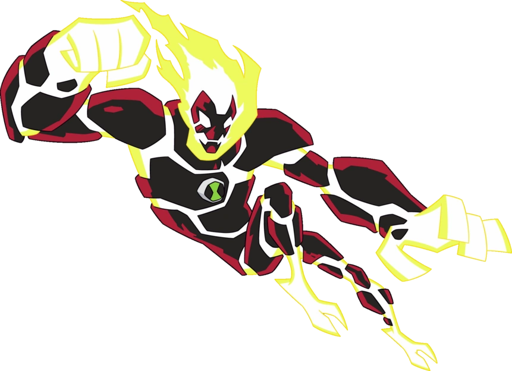

FUEGO
POWERS:
Siendo una de las formas alienígenas más versátiles de Ben, Fuego es un pirocinético, lo que significa que tiene la capacidad de generar y manipular calor intenso y fuego de su cuerpo. Puede formar fuego en cualquier forma que elija, comúnmente bolas de fuego. También puede potenciar el fuego en sus manos para dar golpes llameantes, y puede exhalar fuego como un dragón. Para colmo, incluso puede absorber calor y fuego al mismo tiempo.Esto significa que puede apagar un incendio más rápido de lo que puede encenderlo.

DEBILIDADES:
Si se expone a suficiente agua o sustancias extintoras, su fuego se extinguirá, aunque aún puede calentarse y volver a encenderlo en poco tiempo.
Como se mencionó anteriormente, cuando está bajo los efectos de un resfriado, la piroquinesis de Fuego se reemplaza por criocinesis. A pesar de los nuevos poderes que esto le da, Fuego es completamente "no funcional" para su naturaleza ardiente y el frío todavía perjudica su salud, lo que significa que técnicamente sigue siendo una "debilidad", pero no del todo, ya que nunca debilitó exactamente a Fuego (aunque le tomara un tiempo dominarlo).